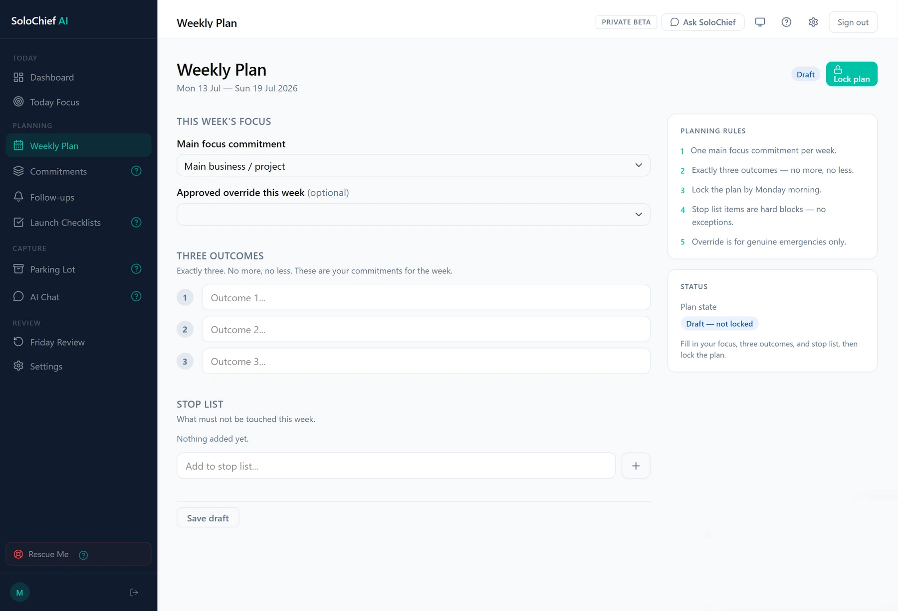
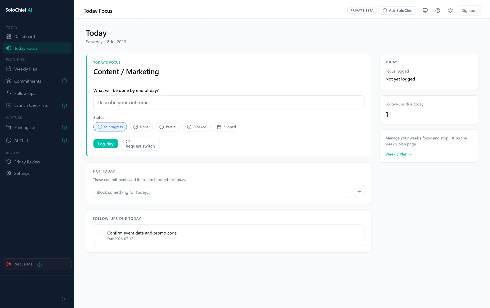

Build a week the system can protect.
- Weekly Plan
- Main focus commitment
- Three weekly outcomes
- Stop List
- Lock plan
In practice: Lock this week's plan once the outcomes are set.

Plan the week, protect today's focus, capture what changes, keep commitments moving and review what actually happened.
One operating rhythm. Web and pocket.
Most productivity tools wait for you to open them. SoloChief keeps the week moving by bringing the right focus, follow-up or reminder back to you.

Build a week the system can protect.
In practice: Lock this week's plan once the outcomes are set.

Keep one outcome clear while the day changes.
In practice: Request a switch when a new priority genuinely outranks today's outcome.

Keep open commitments visible until resolved.
In practice: An overdue follow-up surfaces again in the next Friday Review.
Close the week with what actually happened.
In practice: Carryovers from Friday feed directly into next week's plan.
SoloChief connects planning, focus, follow-through, review and communication in one weekly operating system.
SoloChief enforces an operating rhythm rather than acting as another passive task list — it pushes back on the week, instead of just recording it.
SoloChief does not silently let the week rewrite itself. Changes require a reason, and distractions can be parked without replacing the current focus.
Switch ChallengePocket Chief brings briefs, reminders and quick updates into WhatsApp so the operating rhythm does not depend on reopening a dashboard.
Pocket Chief · ProFollow-ups, commitments and stalled work remain visible until they are resolved, moved or deliberately closed.
Follow-up TrackerWhen the day breaks down, Rescue Me helps identify what can still move instead of forcing the original plan.
Rescue MeSelect a stage to see the real SoloChief screen behind it.
Commitments, deadlines and follow-ups become one realistic weekly plan, locked before the week takes over.
Weekly Plan · Command Center
One outcome stays clear while the day changes — switch requests and blocked work never quietly replace it.
Today Focus · Command Center
Every follow-up carries a due date and a reminder, so replies, payments and decisions stop going cold.
Follow-up Tracker · Web and WhatsApp
Friday Review brings completions, slipped work and carryovers together, so next week starts with context.
Friday Review · Command Center
Plan on the web. Carry the plan into WhatsApp. Keep focus, follow-ups and review connected.